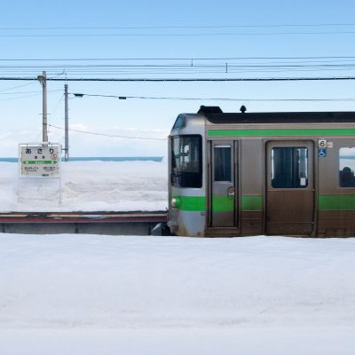
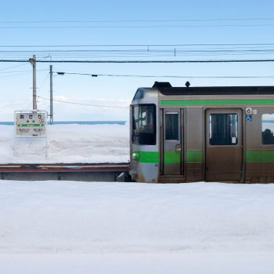
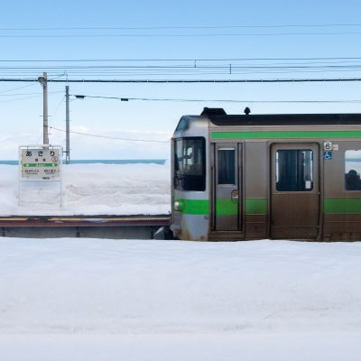

beautiful places in Hokkaido

Asar is a town located in the Akita Prefecture in the Tohoku region of Japan. It is known for its scenic beauty, with the Asahi mountain range in the background and the Oga Peninsula running through the town.
Matsuura is a city located in the Nagasaki Prefecture in the Kyushu region of Japan. It is a historic city with a long maritime tradition and a scenic harbor. Matsuura is also known for its hot springs and historical sites, including the Matsuura Historical Park.
Kitahama is a district located in the city of Kobe in the Hyogo Prefecture of Japan. It is a bustling commercial and financial center, with several high-rise buildings and a large number of shops, restaurants, and offices.
Kogane is a neighborhood located in the city of Yokohama in the Kanagawa Prefecture of Japan. It is known for its shopping and dining options, as well as for its parks and open spaces. The Kogane Cultural Center, which features a theater and a museum, is also located in the area.